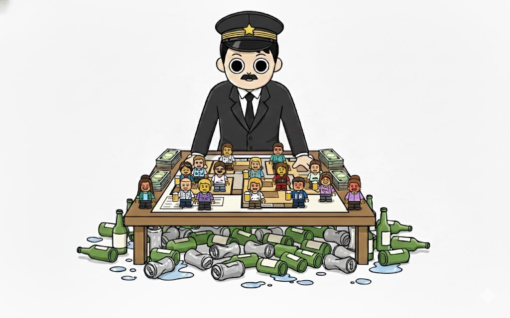

あなたの酒タイプは…

「酔っても冷静、全て計算通り」お酒は強いけど騒がない。場を仕切りつつ、ダウナーで人間観察を楽しむ影の総帥。
基本的特徴：冷徹なるロジカル・ドランカー
お酒は強いが、決して飲まれません。アルコールを摂取しても脳内のCPUは常にフル回転しており、場のパワーバランスや会話の文脈を冷静に分析し続ける「影の支配者」です。感情を爆発させることは稀で、強いお酒をちびちびと嗜みながら、混沌とした飲み会を俯瞰して楽しむ知的なスタンスを持ちます。この安定感は、仕事のトラブル対応で見せる冷静さと通ずるものがあります。
飲み会における特徴：深夜のチェスプレイヤー
端の席を陣取り、失言したメンバーを観察しています。「あ、今あいつ地雷踏んだな」といった空気を誰よりも早く察知し、必要であれば絶妙なタイミングで助け舟を出したり、逆に追い込んだりする、まさに飲み会の戦略家。気づけば全員の弱みを把握していることも。状況を把握した上で、あえて泳がせる余裕さえ持っています。
長所と魅力：圧倒的なリスク管理能力
泥酔者が続出するカオスな状況下でも、唯一正気を保ち、会計の齟齬を正し、全員を無事に帰宅させる「最後の砦」です。その信頼感は、組織において不可欠なものであり、周囲からは密かに神格化されています。
【感情解放力】
たまには論理の鎧を脱ぎ捨てて、意味のないバカ話をしてみてください。あなたの「人間味」が見えたとき、周囲の親近感はさらに高まり、チームの壁がなくなります。